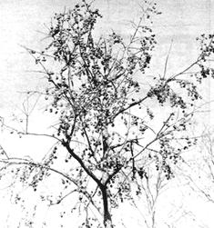
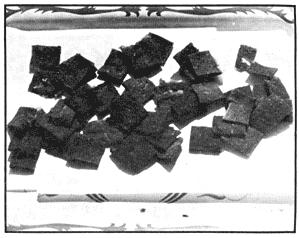

From mid-September, through Christmas and into the new year, tons and tons of a particularly delicate and delicious wild fruit go to waste-as far as humans are concerned -over a tremendous area of rural America. From the fence rows of Appalachia to the Ozarks, all through the southern Gulf states and even into the milder, fruit-growing regions of Michigan and the Great Lakes country the woods and roadsides, abandoned fields and eroded wastelands now covered with second-growth brush are dotted and lined with . . . wild persimmons in full fruit.
A persimmon tree burdened with ripe fruit is really something to see! Every branch and twig and stem may be crowded with the luscious golden globes of goodness. Not a yellow-gold, but more of a flushed apricot with pinkish overtones.
It's strange that most of this bounty is never harvested because everyone likes juicy, aromatic, dead-ripe persimmons cooled by morning dew and bursting with sweet flavor. And why shouldn't a persimmon be good? The pulp contains as much as 34 percent fruit sugar, making it perhaps the sweetest of all nature's gifts.
It is this very sweetness, however, that limits the use of the fresh fruit because each luscious morsel is like a rich bonbon and only two or three persimmons are enough to cloy the appetite.
There's another reason so few persimmons are gathered: The fruit is edible-and only edible-when it's reached a stage of full ripeness so fragile that it almost melts in the hand and a fall from the tree to hard ground can make it splatter. Really ripe persimmons are about as delicate and difficult to handle as a soap bubble. If you cheat and pick one even a little bit firm and unready, it'll be as bitter as gall and cause your lips to pucker into a twenty-four hour kiss.
What to do? What to do?
Most of us are content to eat one or two ripe persimmons during a fall walk through the woods and let the birds and beasts harvest the rest. And they do harvest! Everything that creeps, crawls, walks or flies loves ripe persimmons and will gorge on them at the slightest opportunity.
Persimmons mature at just the right time for wild creatures that are storing body fat against the cold and famine of winter. Racoons, `possums, squirrels, deer, rabbits, groundhogs, chipmunks, mice and shrews all share the feast. Robins, mockingbirds, thrushes, crows and other birds peck the golden fruit before it falls to the ground. Flies and gnats swarm around crushed persimmons while lizards and strange creepy-crawlies from under leaves and fallen logs rush to join the banquet.
There is no particular reason for haste however, because wild persimmons do not ripen all at one time like other tree crops.
Some country folks insist that it takes a sharp frost to make persimmons soft and edible, but the experienced woodsman knows this is nonsense. The persimmon is ripe and edible when it is soft as a baby's cheek, and this can be as early as mid-September with temperatures still in the 80's or as late as February after nights have dropped below zero.
There is wide variation in the trees of a given area and even in persimmons from the same tree. Some will soften and fall early while others remain hard, astringent and clamped on their limbs until dry as prunes or dates. Indeed, certain varieties of persimmon are referred to by natives as "date-Plums", although they are neither.
Ripe wild persimmons, because of their delicacy, can never be widely available in fruit markets and-therefore-are rarely utilized by modern homemakers. The fruit was an important food source for the Indians, however, and a dessert for pioneers who learned the art of preservation from red neighbors. The secret is in drying the pulp: The same method used by our forefathers to preserve apples, peaches, pears and many kinds of berries and grapes in the days before pressure cookers and canning supplies were available.
Persimmons have to be gathered daily or every other day during the ripening period. Only those that fall on a grassy turf or soft growth of weeds or leaves will be undamaged and bruised or torn fruit is quickly destroyed by insects, animals, fermentation or souring.
If enough hands are available, many persimmons can be gathered undamaged by holding a sheet under a tree while the tree is gently shaken. Each persimmon has to be individually inspected, however, to make sure it is at the soft-ripe stage of perfection. Just one astringent fruit in a half bushel can spoil an entire batch of pulp.
The average ripe persimmon is round and about an inch and a half in diameter. Each contains from two to six large seeds surrounded by juicy, sweet pulp and separating seeds from pulp presents a problem worthy of the talents of Eli Whitney. The ordinary colander or food mill doesn't work well for this since the seeds are large, hard, slippery and extremely difficult to remove. We've never been able to learn how the Indians or our grandparents did the job and, perhaps, they were content to simply mash the whole fruit and dry everything together. This seems impractical, though, because of the large percentage of seeds to pulp.
At any rate, a moment of happy inspiration solved this annoying problem and now enables us to process and preserve our family supply of persimmons without too much effort. Among our kitchen utensils, we found a small two-handed press known as a "potato ricer". It's inexpensive and available from any hardware store. The soft, ripe persimmons are simply dropped into the press, squeezed and the sweet orange-colored pulp scraped from the sides and transferred to a container. Waste seeds and skins are then removed in readiness for the next batch. By this means, a peck of persimmons can be processed in about an hour and will produce approximately two quarts of pulp.
Looking at this fragrant orange pulp, the innocent homemaker will immediately think: "Oh, I can just add sugar and a little lemon and cook up a batch of delicious jam for the winter."
Alas, it cannot be. Even the gentlest cooking of persimmon pulp seems to bring back the astringency and makes it inedible.
The pulp can be frozen and stored in deep-freeze or refrigerator compartments. It may darken when thawed but there is little loss of the delicate flavor. Freezing and freezer equipment are not always available to the flower children and others interested in the simple life and a return to nature. For them, drying offers the easiest solution.
The Indian method was to spread a quarter-inch of pulp on a peeled log and let it remain until sun and air-dried to the consistency of tough leather. Of course, the pulp had to be protected from rain and roving animals during the ten days or longer it took to cure.
Once dried, the pulp was called "persimmon leather" and could be kept almost indefinitely if protected from dampness and mould. This was usually accomplished by hanging the slabs by thongs from tipi poles or the kitchen rafters of a settler's log cabin. Smoke from cooking and heating fires helped to preserve the dried fruit and keep insects away.
We find that a cookie sheet is more practical than a peeled log and dehydration can be speeded by using an oven's low heat.
When desired, the persimmon leather can be cut into small pieces and eaten like candy. It is much relished by small children this way. Or, the dried pulp can be mixed like raisins with cornmeal and other cereals to make Indian puddings, various cakes and biscuits.
Maybe times haven't changed so much after all. Today, just as in grandfather's time, there is an ample supply of delicious fruit ready to preserve for the winter's stores at no cost other than your own pleasant labors.
|
 |
 |
|